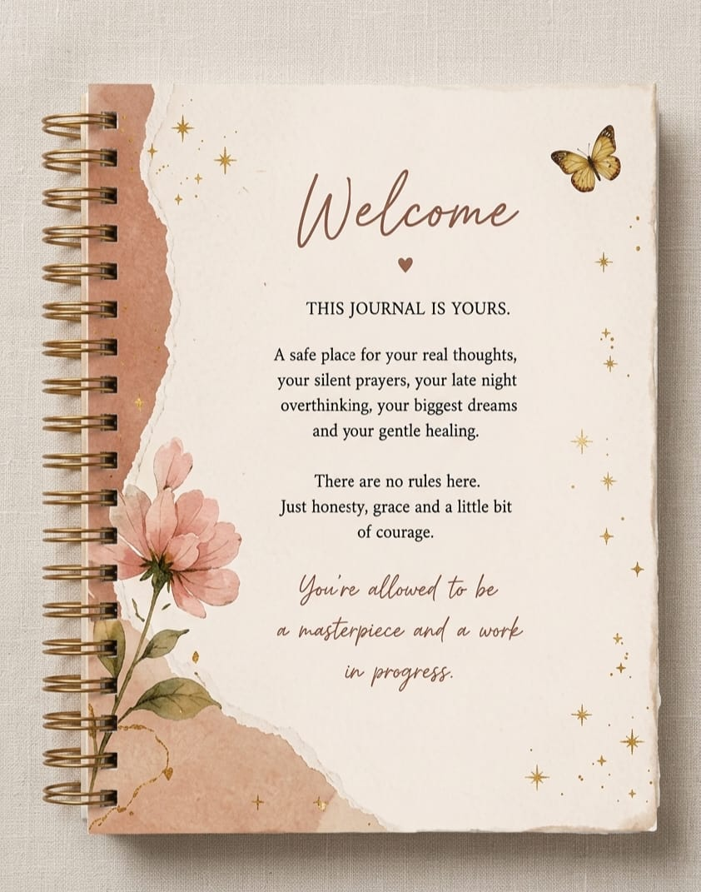
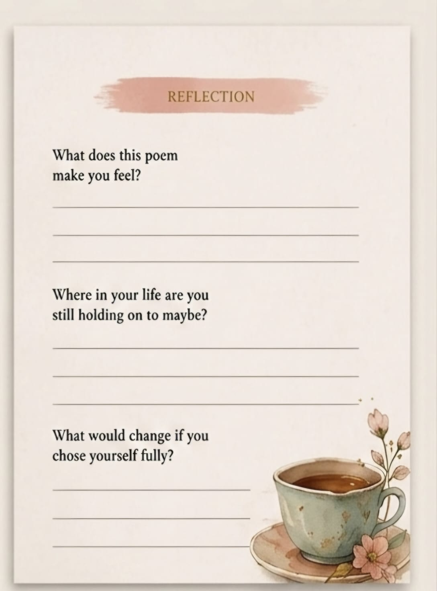
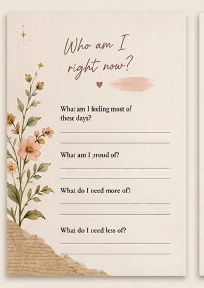
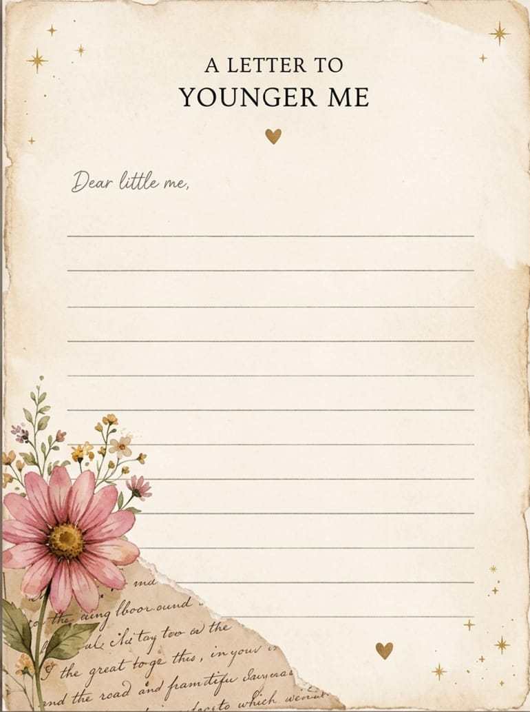

Featuring a double-gold wire-o spiral binding and heavy cover stock.
THE UNWRITTEN THINGS
"A journal for the thoughts that never left the heart."
Beautifully bound with a vintage gold spiral, The Unwritten Things is a 200-page guided sanctuary designed for emotional healing. Featuring original poetry, delicate botanical art, and structured spaces for the reflections you usually keep hidden, this journal gently guides you through the process of letting go.
KSh 2,500
💬 Order via WhatsApp Clicking connects you straight to my chat to coordinate your delivery.A Journey Through the Pages
Take a gentle glance at the safe spaces waiting inside.

The Sanctuary's Welcome
The very first page you see. A tender reminder that there are no strict rules here—just honesty and grace.

Some Things Bloom Late
A moody, gorgeous midnight-window illustration accompanying original poetry to soothe your timeline anxieties.

Safe Spaces to Reflect
Deep, intentional prompts paired with cozy illustrations to help you map exactly what your soul is holding onto.

Letters Never Sent
A vintage torn-paper backdrop layout dedicated to writing letters to the younger version of you who survived the storm.
Room Details
| Size | Premium A5 (perfect for keeping on a bedside table or carrying in a bag) |
| Pages | 200 pages of deeply intentional guided reflection and poetry spreads |
| Paper Quality | Ultra-thick 100–120 GSM cream paper (prevents ink bleeding, perfect for smooth writing) |
| Finishing | Double gold wire-o binding with premium cover foil accents |